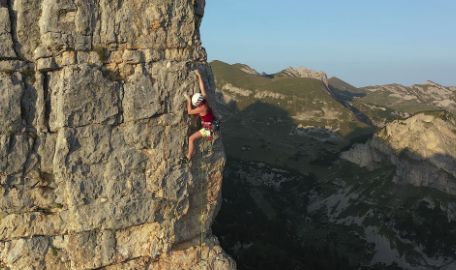
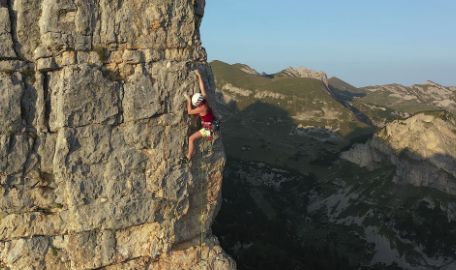

Klettern, Bouldern, und Seilsportarten
 



Klettern ist die Bewegung in der Vertikalen mithilfe der Beine, Arme und Hände entlang von Kletterrouten.
Ein Kunststoffseil und Felshaken, bzw. Bohrhaken sowie mobile Sicherungsteile dienen in Verbindung
mit einer Seilbremsmethode der Sicherung gegen Absturz.
Die Seilschaft (meist zwei, selten drei Personen) bewegt sich im Fels nicht gleichzeitig, da der Sturz
eines Seilpartners den Absturz der ganzen Seilschaft bedeuten würde.
Der sich jeweils bewegende Seilpartner wird durch den Partner mit dem Seil über die Haken und die
mobilen Sicherungsmittel gesichert, während der sichernde Partner seinerseits gesichert ist
(entweder an einen Stand oder am Boden).
Ursprünglich wurde nur an natürlichen Felsen geklettert, seit Anfang der 1990er-Jahre auch in Kletterhallen.
Inhaltsverzeichnis
Geschichte
Anfänge des Kletterns
Klettern ist eine vom Menschen seit jeher angewandte Fortbewegungsart in der vertikalen Ebene.
Dabei wurden auch immer schon Felsen bestiegen, sei es aus kulturellen Gründen (zum Beispiel als
religiöser Ort) oder aus praktischen Gründen wie dem Ausschau halten nach Tieren oder Feinden.
So wurden auf dem Rabenfels in der Fränkischen Schweiz Tonscherben gefunden, die belegen, dass dieser
Fels bereits 800 bis 400 v. Chr. bestiegen [12] wurde.
Die damaligen Bewohner bewältigten dabei bereits den dritten Schwierigkeitsgrad.
Im Mittelalter bekamen Felsen eine zunehmende strategische Bedeutung, exponierte Felsen wurden als
Spähwarte zum Schutz vor Feinden oder als Signaltürme zum Weiterleiten von Nachrichten genutzt.
Durch die Besteigung immer weniger zugänglicher Gipfel ab ca. 1800 musste auch beim Bergsteigen zur
Überwindung von Graten und Felsstufen zunehmend geklettert werden, dies geschah jedoch meist technisch.
Beginn des Freikletterns
Der Falkenstein in der Sächsischen Schweiz
Als Geburtsstunde des sportlich motivierten Kletterns gilt die Besteigung des Falkensteins in der
Sächsischen Schweiz durch Schandauer Turner im Jahr 1864.
Ab etwa 1890 entwickelte sich in der Sächsischen Schweiz das Freiklettern, bei dem auf künstliche
Hilfsmittel zur Fortbewegung beim Klettern gänzlich verzichtet wird (siehe dazu auch die Geschichte des
Kletterns in der Sächsischen Schweiz).
Außerhalb Sachsens fand diese Art des Kletterns vorerst aber nur vereinzelt Beachtung.
1874 wurde der Club Alpin Francais gegründet, dessen Mitglieder an den Sandstein-Blöcken im Wald von
Fontainebleau übten.
Vorerst wurde das Bouldern vor allem als Training für alpine Unternehmungen betrachtet und entwickelte
sich erst in den folgenden Jahrzehnten zu einem eigenständigen Betätigungsfeld.
Innerhalb dieser Gruppe wurde viele wesentliche Meilensteine für das Klettern erfunden, wie der
moderne Kletterschuh, das Kletterseil aus Nylon oder den Vorläufer der Seilklemme.
Bereits 1934 gab es sehr schwierige Boulderprobleme in Fountainbleau, auch wenn das damals noch nicht
so genannt wurde.
Angeregt durch Fountainbleau, haben John Gill (USA) und Wolfgang Fietz (Deutschland) das Bouldern
in ihre Heimatländer importiert und dann weiterentwickelt.
Technische Epoche
Das technische Klettern wurde ab den 1920er-Jahren verstärkt weiterentwickelt und eingesetzt, wodurch die
letzten bedeutenden unbezwungenen Wände der Alpen geklettert werden konnten.
Nach dem Zweiten Weltkrieg konnten mithilfe des neu entwickelten Bohrhakens immer abweisendere
Felswände geklettert werden. So war es – mit entsprechendem Material- und Zeitaufwand – möglich, praktisch
jede Felswand zu bezwingen.
Dies mündete schließlich in dem Ziel, sämtliche Wände zu klettern.
Mitte der siebziger Jahre begannen einige Alpinisten das technische Direttissima-Klettern als Sackgasse
und „Mord am Unmöglichen“ zu kritisieren.
Renaissance des Freikletterns
Durch die steigende Leistungsorientierung entstand dann Ende der 1960er- und Anfang der
1970er-Jahre auf Basis des Freiklettergedankens aus der sächsischen Schweiz das Sportklettern.
Westdeutsche Kletterer lernten diese Art zu Klettern bei Besuchen im Elbsandsteingebirge
kennen, importierten diese nach Westdeutschland und entwickelten sie weiter.
Dies mündete schließlich 1975 in den Rotpunkt-Gedanken von Kurt Albert.
Seitdem wurden alle Varianten des Kletterns weltweit immer populärer, durch systematisches Training
und zunehmende Professionalisierung kam es zu enormen Leistungssteigerungen.
Auch im alpinen Bereich wurde der Stil einer Begehung bzw. Besteigung immer wichtiger, auf künstliche
Hilfsmittel wird verzichtet und Haken und mobilen Sicherungsmittel dienen nur zur Absicherung
und nicht zur Fortbewegung.